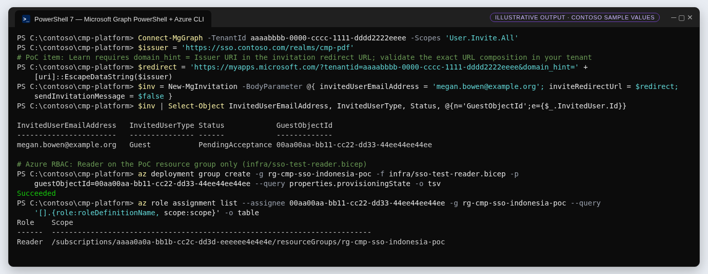
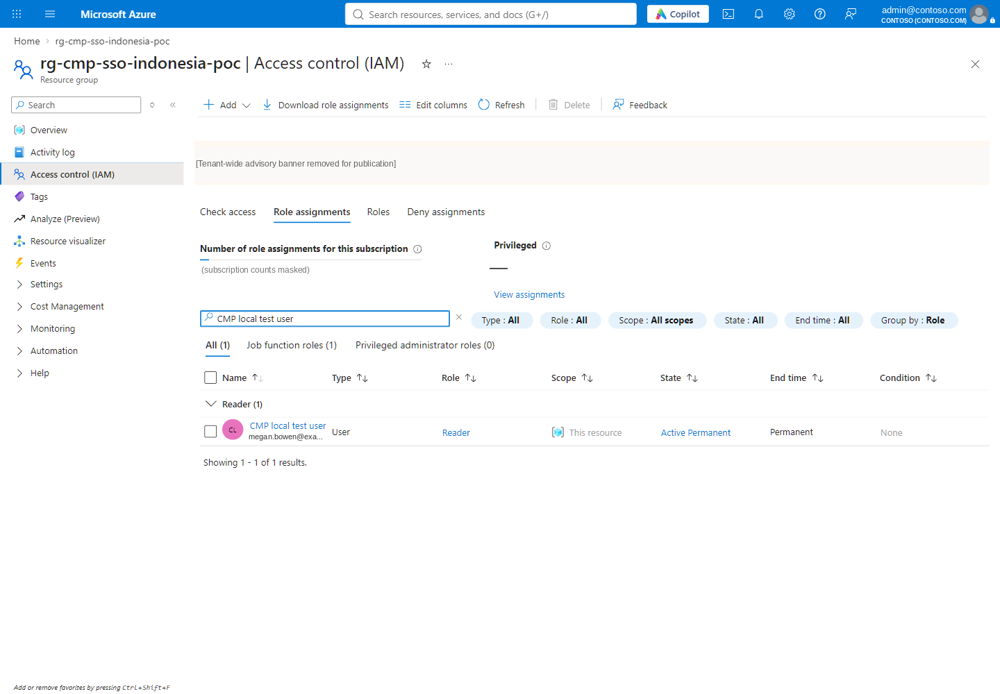

G5 · Onboard the B2B guest, enforce MFA and grant Azure access
Invite the external person with domain_hint routing, understand redemption and consent, grant Reader on one resource group, and require MFA for guests.
Outcome#
A B2B guest for the external person, routed to Keycloak through domain_hint, with Azure Reader on one resource group and an Entra Conditional Access policy that requires MFA for guests.
1 · Invite the guest#
Invite in the admin center (Users › All users › New user › Invite external user) or with Microsoft Graph. For Domainless federation the invitation redirect URL must include domain_hint whose value equals the IdP's Issuer URI; the email domain does not need to match a verified domain (Learn). Graph's POST /invitations takes invitedUserEmailAddress and inviteRedirectUrl, creates a Guest user and returns status: PendingAcceptance and an inviteRedeemUrl; the least-privileged permission is User.Invite.All (Learn).


Learn states the requirement (domain_hint = Issuer URI in the redirect URL) but does not give a full URL example. The base URL above (My Apps with tenantid) is a reasonable choice; validate the composition — including URL encoding of the Issuer — in your tenant before you send invitations at scale.
2 · Redemption and consent#
On first use the guest authenticates at the routed IdP, then sees Contoso's consent pages; the invitation moves from PendingAcceptance to Accepted (Learn). Microsoft notes that direct links still go through first-time consent, and that a guest invited at an alias needs the email invitation (Learn).
PoC: the guest object and Reader assignment exist and were read back. No invitation email was sent. One redemption attempt in an isolated browser reached Microsoft's consumer sign-in route and did not render a usable page; Graph still reports PendingAcceptance. This is recorded as open, not as a failure diagnosis.
3 · Azure RBAC on the smallest scope#
targetScope = 'resourceGroup'
@minLength(36)
@maxLength(36)
param guestObjectId string
resource reader 'Microsoft.Authorization/roleAssignments@2022-04-01' = {
name: guid(resourceGroup().id, guestObjectId, 'cmp-poc-test-reader')
properties: {
principalId: guestObjectId
principalType: 'User'
roleDefinitionId: subscriptionResourceId('Microsoft.Authorization/roleDefinitions', 'acdd72a7-3385-48ef-bd42-f606fba81ae7')
}
}
output roleAssignmentId string = reader.id
acdd72a7-3385-48ef-bd42-f606fba81ae7 is the built-in Reader role (Learn). Assign to a group of guests in production rather than to individuals (WAF SE:05).

4 · Conditional Access and MFA#
- Mandatory MFA already applies to every account signing in to the Azure portal, including B2B guests (Learn).
- Add an explicit policy for Guest or external users requiring MFA so the behaviour does not depend on platform enforcement alone; for SAML/WS-Fed guests use the Require multifactor authentication grant, not an authentication strength (Learn).
- The guest registers MFA in the Contoso tenant (the resource tenant). Microsoft notes the resource tenant needs licences that support Entra MFA, and the guest consumes that licence (Learn).
- Microsoft recommends against requiring managed devices for external users unless you trust device claims from their home Entra tenant (Learn) — a Keycloak-federated guest has no such tenant.
5 · Lifecycle#
| Event | Keycloak | Entra | Azure |
|---|---|---|---|
| Joiner | Create user with email attribute | Invite with domain_hint | Add guest to the access group |
| Mover | Update attributes | Review group memberships | Change role assignments |
| Leaver | Disable user, revoke sessions | Block sign-in / delete guest | Remove assignments |
| Periodic | Review CMP-managed users | Access reviews for guests | Review RBAC at RG scope |